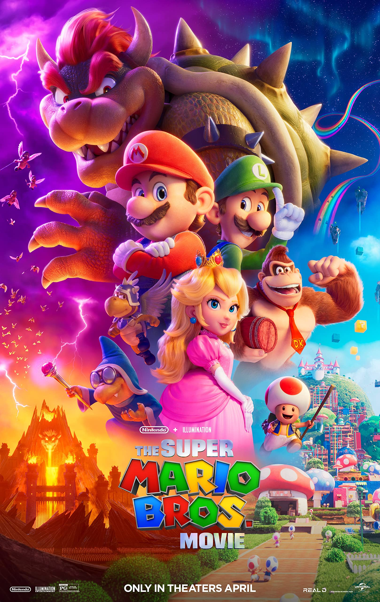
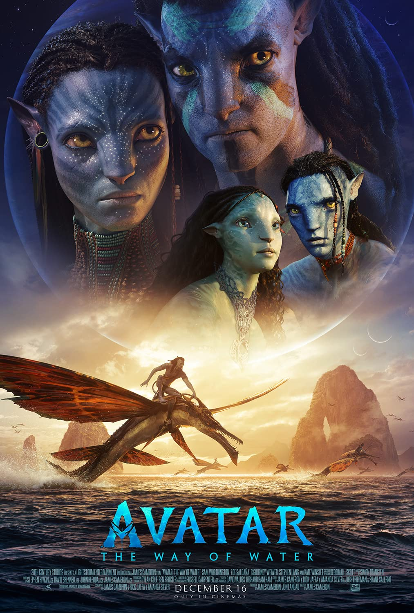

1. ザ・スーパーマリオブラザーズ・ムービー
ニューヨーク・ブルックリンで配管工を営むマリオとルイージの兄弟は、謎の土管に吸い込まれ、 魔法に満ちた別世界へと迷い込んでしまいます。 旅の途中で離ればなれになってしまったルイージを救うため、 マリオはキノコ王国のピーチ姫やキノピオ、ドンキーコングと協力し、 世界征服を企むクッパに立ち向かいます。
| 上映日 (6月3日) | スクリーン |
|---|---|
| 10:00 - 12:00 | スクリーン 1 |

2. アバター：ウェイ・オブ・ウォーター
あれから10年—。ナヴィになった元海兵隊のジェイクは、神秘の星パンドラの森で妻のネイティリと家族を築いた。 しかし、再び人類の侵略が始まり、一家は神聖な森を追われ、海の一族のもとに身を潜める。 そこでも敵の手が迫り、家族の絆が試される新たな戦いが始まる。
| 上映日 (6月4日) | スクリーン |
|---|---|
| 13:00 - 15:00 | スクリーン 1 |